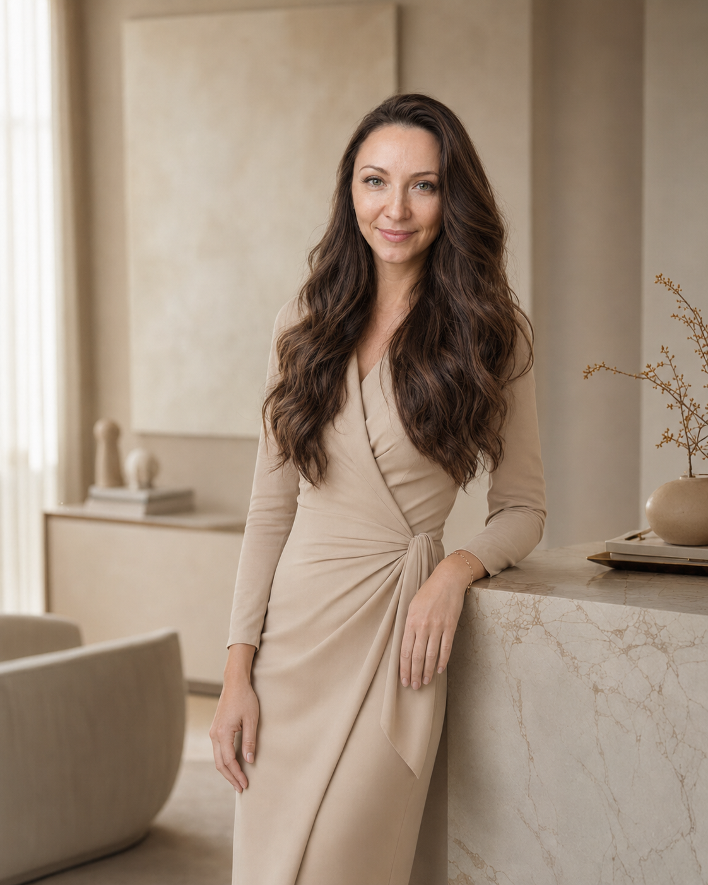

Тревога не отпускает
Мысли снова возвращаются к одному и тому же, трудно расслабиться, а любое решение кажется рискованным.
Психолог-консультант · онлайн · взрослые 18+
Я — Марина Дугина. Помогаю навести порядок там, где сейчас тревога, усталость, повторяющиеся конфликты или непонимание себя — спокойно, глубоко и без давления.
С чем можно прийти
Сложное состояние не делает вас слабым или «неправильным». Иногда это способ психики сообщить: привычные способы справляться больше не помогают и нужно внимательнее посмотреть на происходящее.
Мысли снова возвращаются к одному и тому же, трудно расслабиться, а любое решение кажется рискованным.
Даже обычные дела требуют усилий. Отдых не восстанавливает, появляется апатия или раздражение.
Конфликты повторяются, трудно говорить «нет», просить о важном или понимать свои чувства рядом с другим.
Страх, вина и чужие ожидания перекрывают собственный голос. Хочется ясности, но её пока нет.
Внешне всё может быть благополучно, но внутри — ощущение чужой жизни и непонимание своих желаний.
Перемены, потери или затянувшийся сложный период выбили почву из-под ног, и непонятно, как двигаться дальше.
Почему так происходит
Не существует одного объяснения для всех. Вместе мы можем исследовать именно вашу историю — без диагнозов по списку симптомов и поспешных выводов.
Когда долго приходится справляться, заботиться о других или жить в неопределённости, ресурсы постепенно истощаются.
Одна часть вас хочет перемен, другая боится последствий. Это напряжение забирает силы и мешает выбирать.
Способы, которые когда-то помогали выстоять, позже могут мешать слышать чувства, просить о помощи и быть ближе.
Когда собственные потребности долго остаются на последнем месте, легко потерять контакт с собой и накопить раздражение.
То, чему не нашлось места и слов, может возвращаться напряжением, виной, апатией или повторяющимися реакциями.
Чужие ожидания и привычные сценарии иногда заглушают вопрос: что действительно важно именно мне?
Ваша реакция имеет контекст. Понимание причин не отменяет ответственности за выбор, но помогает перестать воевать с собой и увидеть, что можно менять.
Мой подход
Мне важно не только облегчить сегодняшний разговор, но и помочь вам увидеть связи, понять причины и постепенно вернуть опору на себя.
Не свожу вас к одной проблеме и учитываю контекст жизни, отношений и внутренних противоречий.
Мы ищем путь, который подходит именно вам, вашему темпу и текущим возможностям.
Цель — не привязать к специалисту, а укрепить способность замечать себя, выбирать и справляться.
Обо мне
Со мной не нужно быть удобным, собранным или заранее знать «правильный запрос». Можно начать с того, что есть: растерянности, усталости, злости или нескольких слов.
Я уважаю ваш темп, но не оставляю разговор бесформенным. Задаю вопросы, помогаю замечать неочевидные связи и возвращаю нас к тому, ради чего вы пришли.
Пространство заботы о себе
Необязательно сразу записываться на консультацию. Возьмите небольшой материал, который поможет остановиться, назвать происходящее и выбрать следующий шаг.
Семь вопросов, которые помогут остановиться, назвать своё состояние и понять, что сейчас требует внимания. После нажатия откроется отдельная страница чек-листа.
Короткий тест, который поможет внимательнее посмотреть на своё состояние и определить первый бережный шаг. Тест не ставит диагнозов.
Небольшой семидневный дневник с практиками и вопросами для самонаблюдения. Каждый день открывается отдельное задание, а записи сохраняются только в вашем браузере. После нажатия откроется первый день программы.
Материалы не заменяют медицинскую, психиатрическую или экстренную помощь и не обещают решить все трудности за семь дней.
Что может измениться
Изменения у каждого складываются по-разному. Это не гарантии, а возможные ориентиры совместной работы.
Яснее понимать свои чувства и потребности.
Замечать причины повторяющихся реакций.
Увереннее обозначать личные границы.
Меньше действовать автоматически.
Принимать более осознанные решения.
Возвращать ощущение внутренней опоры.
Постепенно учиться справляться без постоянной зависимости от специалиста.
Переносить понимание из разговора в конкретные действия.

Как проходит работа
До встречи можно написать мне несколько слов или задать организационный вопрос. Не нужно заранее готовить длинный рассказ.
Вы рассказываете о ситуации столько, сколько готовы. Встреча проходит онлайн по видеосвязи.
Я задаю вопросы и помогаю отделить главное от того, что сейчас только усиливает шум.
Собираем понимание встречи и намечаем посильный следующий шаг.
Если захотите двигаться дальше, вместе определим темп и формат. Лишние встречи я не навязываю.
Оплатить консультацию можно после встречи. Об отмене или переносе важно сообщить не позднее чем за 24 часа.
Отзывы
Сохраняю живую речь и анонимность авторов. Эти впечатления индивидуальны и не обещают такого же результата каждому.
«Каждая встреча с вами не проходит даром. Хочется всё запомнить и внедрить в свою жизнь. До сих пор пересматриваю эфиры».
Об открытых встречах«Огромное спасибо за информацию — как всегда доступно и понятно. После встречи стала внимательнее относиться к своим целям и поняла, где сама себе мешаю».
О новых ориентирах«Благодарю за встречу. Это было очень ценно и интересно. Теперь я гораздо яснее понимаю, чего действительно хочу».
О ясности«Практика отпускания очень помогает. После неё стало спокойно, а освободившееся внутреннее пространство будто заполнилось светом и теплом».
О практике«Спасибо за полезную и важную информацию. Всё объяснено простым человеческим языком — появилось понимание, с чего начать».
О понятной подаче«Огромная благодарность за проведённый эфир. Было подсвечено много неочевидных моментов, из которых складывается общая картина и возможное решение».
О целостной картинеЧастые вопросы
Да. Напишите мне в Telegram, WhatsApp или по email. Можно коротко спросить о формате, стоимости или рассказать несколькими словами, что вас беспокоит.
Я работаю индивидуально со взрослыми от 18 лет.
Сейчас консультации проходят только онлайн по видеосвязи.
Нет. Сначала мы знакомимся и уточняем запрос. Если вы захотите продолжить, темп и формат обсуждаем вместе.
После нашей встречи.
Пожалуйста, сообщите об отмене или переносе не позднее чем за 24 часа до начала.
Обычно я отвечаю в течение дня. Стандартное время связи — с 10:00 до 20:00 по Москве.
Следующий шаг
Необязательно сразу разбираться во всём или подробно описывать ситуацию. Достаточно нескольких слов и одного вопроса.